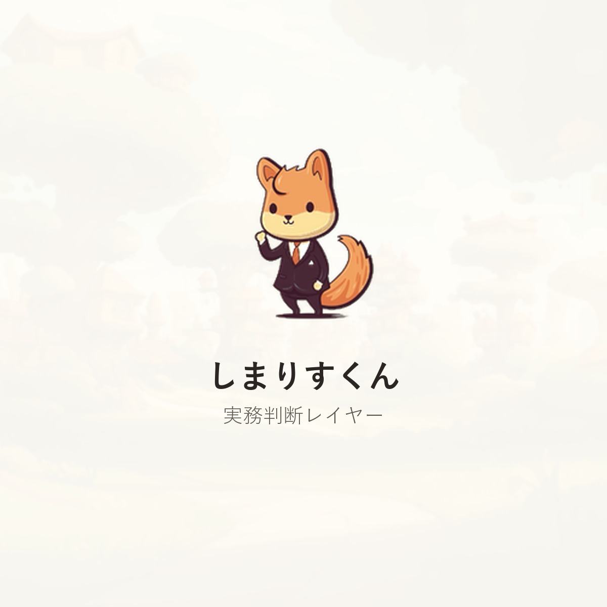
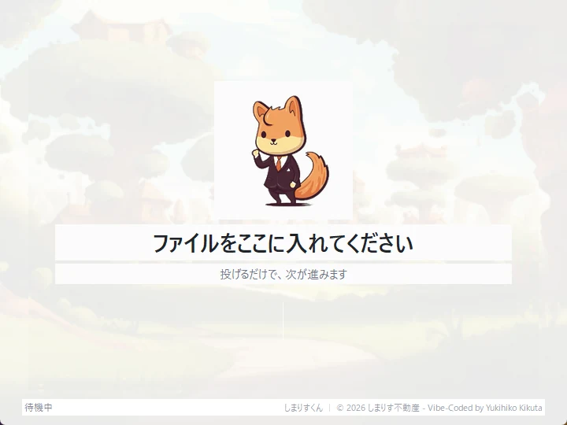
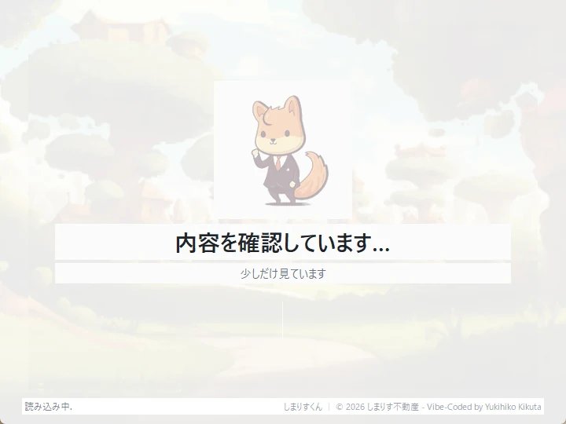
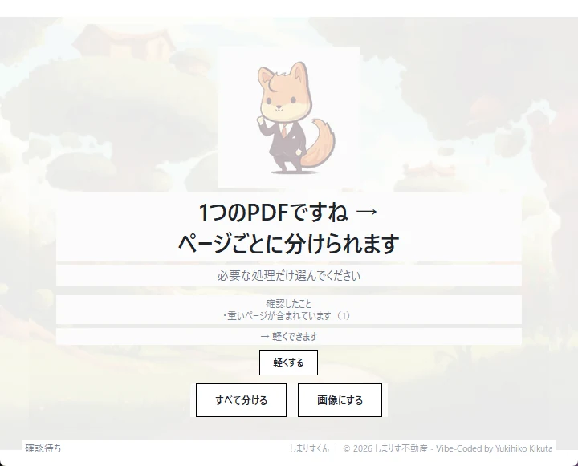

SHIMARISU brand site
しまりすくん
投げるだけで、
次が進みます。
PDF、画像、図面、FAX。
次に何をすればいいか迷わないように、
しまりすくんが見て、判断します。




Concept
実務を止めないための判断レイヤー。
DAKEは処理します。
しまりすくんは、何をするか考えます。
Flow
投げたあとを、静かにつなぎます。
- 投げる
- 見る
- 判断する
- 気づく
- 次の一手
- 処理へ渡す
Why
迷う時は止まります。
実務は、
何をするか迷うと止まります。
PDFを軽くしたい。
画像にしたい。
分けたい。
でも、
何を使えばいいかわからない。
しまりすくんは、
その迷いを減らすために作りました。
DAKEは処理します。
しまりすくんは、
次の一手を静かに判断します。
Practical Sense
実務の小さな違和感に気づきます。
- 白紙っぽいページがあります
- 向きが少し混在しています
- FAXっぽいPDFです
- 図面っぽいページがあります
- PDFが少し重めです
Quiet Action
押せるものだけ、押せます。
判断結果を一つに絞り、
押せるものだけを静かに残します。
- 提案は最大1つ
- 押せるものだけ押せます
- 迷う時は止まります